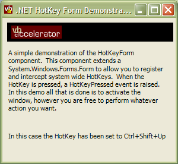

HotKeyForm (59K)
HotKeyForm (59K)
 23 Dec 2002
23 Dec 2002
First Posted

HotKeyForm
Extending the .NET Windows Forms to respond to System Wide HotKeys
One of the Windows API features which isn't included in the .NET Framework is setting up and receiving notifications from system-wide HotKeys. This article presents an extended version of System.Windows.Forms.Form which adds HotKey functionality.
HotKeys in Win32
Win32 allows you to set up combinations of key-presses which can be associated with an application on a system-wide scope, called Hotkeys. When a user presses a registered HotKey it doesn't matter which application is active when they pressed it, the hot-key message will get routed to your application.
There are two types of HotKeys:
- Application activation HotKeys
These are the simplest type. When the HotKey is selected your application is activated. They are very simple to set up but they only activate your application - you can't determine if this was due to the HotKey being pressed nor take any other action. - Registered HotKeys
This type of HotKey sends a WM_HOTKEY message to your application when the HotKey is pressed. so you can choose how to respond to the key. Setting up this type is slightly more complex and you need to be able to respond to the WM_HOTKEY message through the application's form WndProc to work with the HotKey message.
This article describes how to create and respond to the second type, Registered HotKeys.
Registering a HotKey
Registering a system-wide HotKey is achieved in two steps:
- Creating a globally unique identifier for the HotKey. You do this using the Win32 Global Atom database.
- Registering the HotKey itself.
1. The Win32 Atom Databases
Win32 Atom databases store a list of unique strings which are internally identified by a 16 bit integer ID. The Global Atom database creates string lists which are accessible to all processes. In addition to this each process on the system can have its own Local Atom database. These functions could be quite useful for other purposes - if you need to store a list of unique strings and IDs in an application, you could take advantage of the Atom database to do it. However, as there is only one atom database per process you would have to be careful! Note that an applications process includes both the executable and any OCXs or DLLs being used in that executable.
The Global Atom database functions in Win32 are GlobalAddAtom, GlobalDeleteAtom, GlobalFindAtom and GlobalGetAtomName. The first step of registering a HotKey is to create a string that is unlikely to be in use by any other application on the system and then get an ID for it by calling GlobalAddAtom for that string. In the download string is created by specifying a local key string to which the current GetTickCount value is appended.
2. Registering the HotKey
Registering the key itself is acheived using Win32's unusually sensibly named RegisterHotKey function. This takes the window handle you want to send the messages to, the globally unique identifier you created using the Global Atom database, a bit flag containing the Shift, Ctrl, Alt or Windows Key keys which have to be pressed for the HotKey and the Virtual Key Code of the key you want to register. Note that in .NET the System.Windows.Forms.Keys enumeration corresponds directly to the Win32 Virtual Key Code constants. These are the key values that are passed to you in the KeyUp and KeyDown events.
Responding to HotKeys
Once you've set up a HotKey, you can respond to it by responding to the WM_HOTKEY message sent to the window by overriding a form's WndProc. The message's wParam of the WM_HOTKEY message contains the globally unique identifier you assigned to the HotKey, and the lParam contains the virtual key code in the HiWord and the key modifiers in the LoWord.
Putting it all Together
To make this easy to use, the download contains an extended version of System.Windows.Forms.Form which includes all of the functionality you need to set up and respond to hotkeys. This is stored within the HotKeyFormLib class in the namespace vbAccelerator.Components.HotKey. The implementation consists of the following classes:
- HotKeyForm
An extended version of System.Windows.Forms.Form which includes HotKey functionality - HotKeyCollection
A collection (extended from the generic ArrayList implementation provided in CollectionBase) which enables you to add, remove and enumerate HotKeys associated with the form. - HotKey
A class for configuring HotKeys. - HotKeyPressedEventArgs
An EventArgs type containing the HotKey which has been pressed. - HotKeyAddException
An extended System.Exception which is thrown if adding a HotKey fails.
To use the library, simply add the relevant version of HotKeyFormLib to your project. Then modify the form you want to respond to HotKeys to be a HotKeyForm rather than a System.Windows.Forms.Form. Now you can start adding hotkeys and responding to events.
To add a HotKey, create a new instance of the HotKey class and set the Name, KeyCode and Modifier properties. There is a constructor which enables you to do this all at one time. Then add the HotKey to the hot key collection using the HotKeys property.
Once you've added the HotKey, you will want to respond to any events. The event raised by the is called HotKeyPressed and also has a corresponding delegate called HotKeyPressedEventHandler. The event parameter to this method contains the HotKey which has been pressed.
Try The Sample
The samples provided register Ctrl+Shift+Up as a HotKey and respond to presses by bringing the application to the foreground, regardless of whether it is hidden or minimised when the hot key is pressed. Another application which uses this code is the "ZoomIn" utility, which uses it to allow you to take dynamic snapshots of screen areas regardless of whether you are clicking on a button in the application you're Zooming in on.